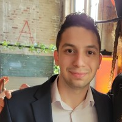

Hello! My name is Ike Meisels, and I am a passionate Software Developer working for DellData Systems out of New City, NY . I specialize in SQL, Data Analysis, and Delphi programming, and I love creating innovative and efficient solutions to personal obstacles .
With experience in JavaScript, Python, Delphi, SQL, C++, Java, HTML, and CSS. I enjoy turning ideas into reality through code. Whether it's building dynamic websites, crafting seamless user experiences, or solving complex problems, I thrive on challenges and continuous learning.
Currently, I am studying Computer Science at Queens College with the goal of recieving my BA after the Spring 2025 Term. In my free time, I enjoy exploring new ideas both philosophical and technological, both of which give me new creative ideas for personal projects that i'm passionate about.
I’m always eager to collaborate and learn from others.
About Me

Welcome to Ike's Portfolio